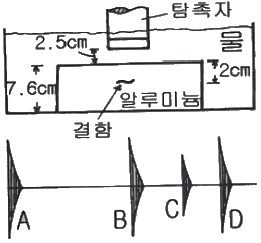

초음파비파괴검사기능사 (2016-07-10 기출문제)
1과목: 초음파탐상시험법
1. 방사성동위원소 중 중성자투과검사에 주로 사용되는 원소는?
- 252CF
- 96Pb
- 235U
- 137CS
(정답률: 68%)

2. 시험체의 양면이 서로 평행해야만 최대의 효과를 얻을 수 있는 비파괴검사법은?
- 방사선투과시험의 형광투시법
- 자분탐상시험의 선형자화법
- 초음파탐상시험의 공진법
- 침투탐상시험의 수세성 형광침투법
(정답률: 75%)
3. 원리가 다른 시험방법으로 조합된 것은?
- RT, CT : 방사선의 원리
- MT, ET : 전자기의 원리
- AE, LT : 음향의 원리
- VT, PT : 광학 및 색채학의 원리
(정답률: 75%)
4. 적외선 써모그래피로 얻어진 영상을 무엇이라 하는가?
- 토모그래피
- 홀로그래피
- C-스코우프
- 열화상
(정답률: 80%)
5. 표면으로부터 표준침투깊이의 시험체 내면에서의 와전류 밀도는 시험체 표면 와전류 밀도의 몇 %인가?
- 5%
- 17%
- 27%
- 37%
(정답률: 53%)
6. 다음 중 누설검사법에 해당되지 않는 것은?
- 가압법
- 감압법
- 수직법
- 진공법
(정답률: 79%)
7. 고압용기, 석유탱크 등의 정기적 보수검사에서 유해한 결함 중의 하나인 표면균열의 검출에 가장 적합한 비파괴검사법은?
- 초음파검사
- 누설검사
- 침투탐상검사
- 음향방출검사
(정답률: 73%)
8. 항공기 터빈블레이드의 균열검사에 적용할 수 있는 와전류 탐상코일은 무엇인가?
- 표면형 코일
- 내삽형 코일
- 회전형 코일
- 관통형 코일
(정답률: 63%)
9. 액체가 고체 표면을 적시는 능력을 무엇이라고 하는가?
- 밀도
- 적심성
- 점성
- 표면장력
(정답률: 83%)
10. 누설검사에 대한 설명 중 틀린 것은?
- 외부에서 기밀장치로 다른 유체가 유입되는 것을 누설이라고 한다.
- 누설검사 중 누설의 유무, 누설위치 및 누설량을 검출하는 것을 특히 ‘누설검지방법’이라고 한다.
- 방치법은 시험체를 가압하거나 감압하면서 일정시간 경과 후 압력변화를 계측해서 누설을 검지하는 방법이다.
- 기포누설검사는 간단하고 검출감도가 비교적 양호하지만, 발포에 영향을 주는 표면의 유분이나 오염의 제거 등 전처리가 중요하다.
(정답률: 59%)
11. 방사선투과검사를 하는 10m 거리에서 선량률이 80mR/hr였다면 40m 거리에서의 선량율(mR/hr)은 얼마인가?(오류 신고가 접수된 문제입니다. 반드시 정답과 해설을 확인하시기 바랍니다.)
- 5
- 7.5
- 10
- 20
(정답률: 52%)
12. 자분탐상시험에서 결함의 검출에 영향을 미치는 인자가 아닌 것은?
- 시험면의 거칠기
- 자화
- 검사 시기
- 자분의 적용
(정답률: 79%)
13. 강제 내에서 굴절된 종파가 90°로 되어 전부 반사하려면 아크릴 수지에서의 입사각이 몇 도이어야 하는가? (단, 아크릴 수지 내에서 종파속도는 2730m/s, 강재 내에서 종파속도는 5900m/s 이다.)
- 약 23.6°
- 약 27.6°
- 약 62.4°
- 약 66.4°
(정답률: 59%)
14. X선과 물질의 상호작용이 아닌 것은?
- 광전효과
- 카이져효과
- 톰슨산란
- 콤프톤산란
(정답률: 73%)
15. 초음파탐상검사에서 진동자의 직경이 작을수록 빔의 분산은 어떻게 되는가?
- 감소한다.
- 증가한다.
- 변화가 없다.
- 증가와 감소를 반복한다.
(정답률: 59%)
16. 초음파의 성질에 관한 설명으로 틀린 것은?
- 일반적으로 20000Hz 이상의 주파수를 초음파라고 정의한다.
- 강(Steel)에서의 횡파음속은 대략 5900m/s이다.
- 초음파의 속도는 재질의 밀도 및 탄성률에 의해 주로 기인한다.
- 음속은 초음파 탐상시 탐상거리와 깊은 관계가 있다.
(정답률: 61%)
17. 초음파탐상검사에서 탐상 주파수를 증가시켰을 때 나타나는 현상은?
- 투과력이 증가하여 두꺼운 재료의 탐상에 좋다.
- 감쇠가 심하게 일어난다.
- 경사각탐상에서 투과력이 커진다.
- 경사각탐상에서 굴절각이 커진다.
(정답률: 53%)
18. 초음파탐상검사에서 모든 조건이 동일할 때 속도가 가장 큰 진동 모형은 어느 것인가?
- 횡파
- 종파
- 표면파
- 전달파
(정답률: 66%)
19. 수침법으로 두께 80mm 강재를 수직탐상할 때 표시기 상에 1차 저면 반사파를 2차 표면 반사파 앞에 나타내고자 할 때 물거리로 옳은 것은? (단, 물에서의 종파속도는 1500m/s, 강에서의 종파속도는 6000m/s 이다.)
- 10mm
- 15mm
- 18mm
- 25mm
(정답률: 36%)
20. 초음파탐상검사에서 전기적 펄스가 기계적 진동으로 변환하는 것을 무엇이라 하는가?
- 경사효과
- 정전효과
- 압전효과
- 카이저효과
(정답률: 74%)
2과목: 초음파탐상관련규격
21. 초음파탐상검사에서 시험장비의 값 3의 dB값이 9.5dB일 때, 값 1500의 dB 값은?
- 15.5dB
- 63.5dB
- 96.3dB
- 45.5dB
(정답률: 50%)
22. 초음파탐상검사에서 수정진동자에 대한 설명으로 옳은 것은?
- 큐리점이 낮아 고온에서 사용이 어렵다.
- 변환효율이 높다.
- 초음파 송신효율이 낮다.
- 물에 잘 녹아 접촉매질로 물을 사용할 수 없다.
(정답률: 42%)
23. 그림은 7.6cm 알루미늄 시험체에 대한 수침법을 도해한 것으로 스크린상의 지시 D는 무엇을 나타내는가?

- 1차 결함지시
- 1차 저면 반사지시
- 2차 탐상면지시
- 2차 결함지시
(정답률: 57%)
24. 주강품의 초음파탐상검사에 대한 설명으로 틀린 것은?
- 초음파의 산란과 흡수로 인한 감쇠가 커져 신호 대 잡음비가 낮아진다.
- 초음파가 진행 중 입자 경계에서 흡수 또는 산란이 없다.
- 주강품의 형상이 탐상 표면과 저면이 평형하지 않아 수직 탐상이 어려움을 준다.
- 피검사체의 표면조건, 예상되는 결함의 종류와 위치 등을 고려하여야 한다.
(정답률: 59%)
25. 초음파탐상에서 파장이 일정할 때 종파의 주파수를 증가시키면 속도는 어떻게 변화하는가?
- 증가한다.
- 감소한다.
- 변화없다.
- 반전한다.
(정답률: 58%)
26. 초음파탐상검사에서 STB-A1 표준시험편의 사용 목적이 아닌 것은?
- 측정 범위의 조정
- 탐상 감도의 조정
- 경사각 탐촉자의 굴절각 측정
- 경사각 탐촉자의 분해능 측정
(정답률: 64%)
27. 초음파탐상검사 시 A 주사법에 스크린상에 나타난 수직지시의 크기가 나타내는 것은?
- 탐촉자로 되돌아온 초음파 반사에너지 양
- 탐촉자가 움직인 거리
- 시험체의 두께
- 초음파 펄스가 발생된 이후 경과시간
(정답률: 57%)
28. 초음파탐상 시험용 표준시험편(KS B 0831)에서 STB-A7963 시험편을 사용하여 시간축을 조정하는 경우 R50면을 향하여 음파를 전파하였을 때 첫 번재로 나타나는 에코의 거리는?
- 50mm
- 75mm
- 150mm
- 25mm
(정답률: 62%)
29. 초음파 탐촉자의 성능 측정 방법(KS B ⑤35)에서 5Q30N에서 N이 뜻하는 것은?
- 진동자의 재료
- 경사각탐촉자
- 수직탐촉자
- 분할형 탐촉자
(정답률: 61%)
30. 알루미늄 맞대기 용접부의 초음파경사각 탐상시험방법(KS B 0897)에서 탐상기의 사용조건으로 증폭 직선성은 몇 % 이내여야 하는가?
- ±3%
- ±5%
- ±7%
- ±10%
(정답률: 64%)
31. 초음파 탐상장치의 성능 측정방법(KS B ⑤34)에 따르면 강재를 5Z20x20A70의 탐촉자로 탐상할 때 강재 내로 전파되는 초음파의 파장은 약 얼마인가? (단, 강재 내 종파속도는 5900m/s, 횡파속도는 3230 m/s이다.)
- 0.33mm
- 0.65mm
- 1.0mm
- 1.2mm
(정답률: 48%)
32. 강용접부의 초음파탐상 시험방법(KS B 0896)에 따라 탠덤탐상을 적용할 수 있는 최소 판두께는 얼마인가?
- 5mm 이상
- 10mm 이상
- 15mm 이상
- 20mm 이상
(정답률: 53%)
33. 강용접부의 초음파탐상 시험방법(KS B 0896)에 따른 경사각 초음파 탐상시 탐상 장치의 에코 높이 구분선 작성에서 영역 구분을 결정할 때 IV영역에 해당하는 에코 높이의 범위는?
- L선 이하
- L선을 넘는 것
- H선 이하
- H선을 넘는 것
(정답률: 60%)
34. 알루미늄의 맞대기용접부의 초음파경사각 탐상시험방법(KS B 0897)에서 입사점을 측정하는 시험편이 아닌 것은?
- STB-A1
- STB-A22
- STB-A3
- STB-A31
(정답률: 55%)
35. 강용접부의 초음파탐상 시험방법(KS B 0896)에 따라 강 용접부를 2방향에서 탐상한 결과, 독립된 동일한 흠에 대한 판정분류가 각각 1류, 3류인 경우 이 흠에 대한 판정은?
- 1류
- 2류
- 3류
- 4류
(정답률: 70%)
36. 강용접부의 초음파탐상 시험방법(KS B 0896)에서 M검출레벨이고 에코높이 영역이 Ⅲ일 때 판두께가 20mm이라면 등급분류가 1류에 해당되는 지시 길이는?
- t/3 이하
- t/2 이하
- 2t/3 이하
- t 이하
(정답률: 54%)
37. 탄소강 및 저합금강 단강품의 초음파탐상 시험방법(KS D 0248)에서 탐상거리 100mm의 강단조품을 시험편 방식으로 탐상감도를 조정할 때 준비해야 할 표준 시험편은?
- STB-A1
- STB-A2
- STB-G형
- STB-N1
(정답률: 43%)
38. 강용접부의 초음파탐상 시험방법(KS B 0896)에서 탠덤탐상할 때 M선은 탐상기 눈금판의 몇 % 높이의 선인가?
- 10%
- 20%
- 40%
- 50%
(정답률: 48%)
39. 강용접부의 초음파탐상 시험방법(KS B 0896)에서 거리진폭특성곡선에 의한 에코높이 영역 구분선이 아닌 것은?
- M선
- L선
- S선
- H선
(정답률: 69%)
40. 금속재료의 펄스반사법에 따른 초음파탐상 시험방법 통칙(KS B 0817)에서 초음파 탐상기의 조정은 실제로 사용하는 탐상기와 탐촉자를 조합해서 전원 스위치를 켜고 나서 최소 몇 분이 지난 후 행하도록 규정하고 있는가?
- 5
- 10
- 20
- 30
(정답률: 72%)
3과목: 금속재료일반 및 용접일반
41. 건축용 강판 및 평강의 초음파탐상시험에 따른 등급분류와 판정기준(KS D 0040)에서 불합격된 강판을 용접보수를 할 때, 최대로 허용할 수 있는 내부결함 제거 부분의 깊이는?
- 공칭 판 두께의 20% 이내
- 공칭 판 두께의 25% 이내
- 공칭 판 두께의 30% 이내
- 공칭 판 두께의 35% 이내
(정답률: 49%)
42. 알루미늄의 맞대기용접부의 초음파경사각탐상시험방법(KS B 0897)에 규정된 시험편 중 대비시험편인 것은?
- STB-A1
- STB-A3
- STB-A31
- RB-A4AL
(정답률: 55%)
43. 물과 얼음의 평형 상태에서 자유도는 얼마인가?
- 0
- 1
- 2
- 3
(정답률: 66%)
44. 초정(primary crystal)이란 무엇인가?
- 냉각시 제일 늦게 석출하는 고용체를 말한다.
- 공정반응에서 공정반응 전에 정출한 결정을 말한다.
- 고체 상태에서 2가지 고용체가 동시에 석출하는 결정을 말한다.
- 용액 상태에서 2가지 고용체가 동시에 정출하는 결정을 말한다.
(정답률: 65%)
45. 다음 중 베어링용 합금이 갖추어야 할 조건 중 틀린 것은?
- 마찰계수가 클 것
- 충분한 점성과 인성이 있을 것
- 내식성 및 내소착성이 좋을 것
- 하중에 견딜 수 있는 경도와 내압력을 가질 것
(정답률: 69%)
46. 주철에서 Si가 첨가될 때, Si의 증가에 따른 상태도의 변화로 옳은 것은?
- 공정 온도가 내려간다.
- 공석 온도가 내려간다.
- 공정점은 고탄소측으로 이동한다.
- 오스테나이트에 대한 탄소 용해도가 감소한다.
(정답률: 47%)
47. 마그네슘(Mg)의 성질을 설명한 것 중 틀린 것은?
- 용융점은 약 650℃ 정도이다.
- Cu, Al보다 열전도율은 낮으나 절삭성은 좋다.
- 알칼리에는 부식되나 산이나 염류에는 침식되지 않는다.
- 실용 금속 중 가장 가벼운 금속으로 비중이 약 1.74 정도이다.
(정답률: 60%)
48. 다음 중 면심입방격자의 원자수로 옳은 것은?
- 2
- 4
- 6
- 12
(정답률: 64%)
49. 순철을 상온에서부터 가열하여 온도를 올릴 때 결정구조의 변화로 옳은 것은?
- BCC → FCC → HCP
- HCP → BCC → FCC
- FCC → BCC → FCC
- BCC → FCC → BCC
(정답률: 61%)
50. 금속을 냉간 가공하면 결정입자가 미세화되어 재료가 단단해지는 현상은?
- 가공경화
- 전해경화
- 고용경화
- 탈탄경화
(정답률: 68%)
51. 열팽창 계수가 상온 부근에서 매우 작아 길이의 변화가 거의 없어 측정용 표준자, 바이메탈 재료 등에 사용되는 Ni-Fe합금은?
- 인바
- 인코넬
- 두랄루민
- 코슨합금
(정답률: 59%)
52. 공랭식 실린더 헤드(cylinder head) 및 피스톤 등에 사용되는 Y 합금의 성분은?
- Al - Cu - Ni - Mg
- Al - Si - Na - Pb
- Al - Cu - Pb - Co
- Al - Mg - Fe - Cr
(정답률: 73%)
53. 다음의 자성 재료 중 연질 자성 재료에 해당되는 것은?
- 알니코
- 네오디뮴
- 센더스트
- 페라이트
(정답률: 51%)
54. Sn - Sb - Cu의 합금으로 주석계 화이트 메탈이라고 하는 것은?
- 인코넬
- 콘스탄탄
- 배빗메탈
- 알클래드
(정답률: 58%)
55. 라우탈(Lautal)합금의 특징을 설명한 것 중 틀린 것은?
- 시효경화성이 있는 합금이다.
- 규소를 첨가하여 주조성을 개선한 합금이다.
- 주조 균열이 크므로 사형 주물에 적합하다.
- 구리를 첨가하여 절삭성을 좋게 한 합금이다.
(정답률: 54%)
56. 전기전도도와 열전도도가 가장 우수한 금속으로 옳은 것은?
- Au
- Pb
- Ag
- Pt
(정답률: 61%)
57. 용융금속이 응고할 때 작은 결정을 만드는 핵이 생기고, 이 핵을 중심으로 금속이 나뭇가지 모양으로 발달하는 것은?
- 입상정
- 수지상정
- 주상정
- 등축정
(정답률: 74%)
58. 아크 전류가 150A, 아크 전압은 25V, 용접속도가 15cm/min인 경우 용접의 단위길이 1cm당 발생하는 용접입열은 약 몇 Joule/cm인가?
- 15000
- 20000
- 25000
- 30000
(정답률: 46%)
59. 연강용 피복 아크 용접봉 중 수소함유량이 다른 용접봉에 비해 적고 기계적 성질 및 내균열성이 우수한 용접봉은?
- 저수소계
- 고산화티탄계
- 라임티타니아계
- 고셀롤로오스계
(정답률: 66%)
60. 팁 끝이 모재에 닿아 순간적으로 팁 끝이 막히거나 팁의 과열, 사용 가스의 압력이 부적당할 때 팁속에서 폭발음이 나며 불꽃이 꺼졌다가 다시 나타나는 현상은?
- 역류
- 역화
- 인화
- 취화
(정답률: 69%)